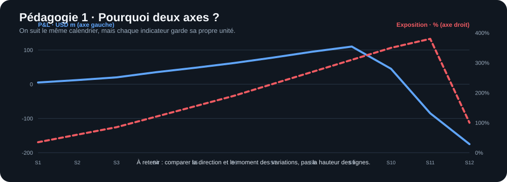
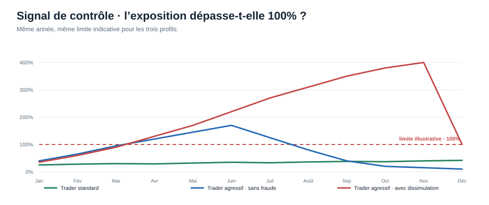

P&L et exposition au risque sur un semestre
Un seul trader fictif, deux indicateurs seulement. Graphique principal épuré, puis deux explications visuelles pour débutants.
1 · Les deux données du trader
Scénario hypothétique à risque élevé · six mois · P&L à gauche (USD millions), exposition à droite (% d’une limite indicative).

2 · Comment lire le graphique ?
L’axe horizontal suit le semestre. Les deux axes verticaux ont des unités différentes.

3 · Pourquoi l’exposition est un signal d’alerte
La limite est dépassée avant que le P&L ne devienne négatif : un gain apparent ne signifie pas que le risque est maîtrisé.

« Ici, je suis un seul trader sur six mois. La ligne bleue montre son P&L en millions ; la ligne orange montre son exposition par rapport à une limite théorique. Attention, ce sont deux échelles différentes. À partir du troisième mois, l’exposition dépasse la limite, alors que le P&L reste positif et continue même à monter. Au dernier mois, la position est débouclée : le risque baisse, mais une forte perte apparaît. C’est pour cela qu’une banque doit surveiller les positions et les limites, pas seulement les gains. Ces chiffres sont illustratifs, pas des données UBS vérifiées. »
Données à ouvrir dans Excel : CSV du semestre · Page GitHub avec les graphiques